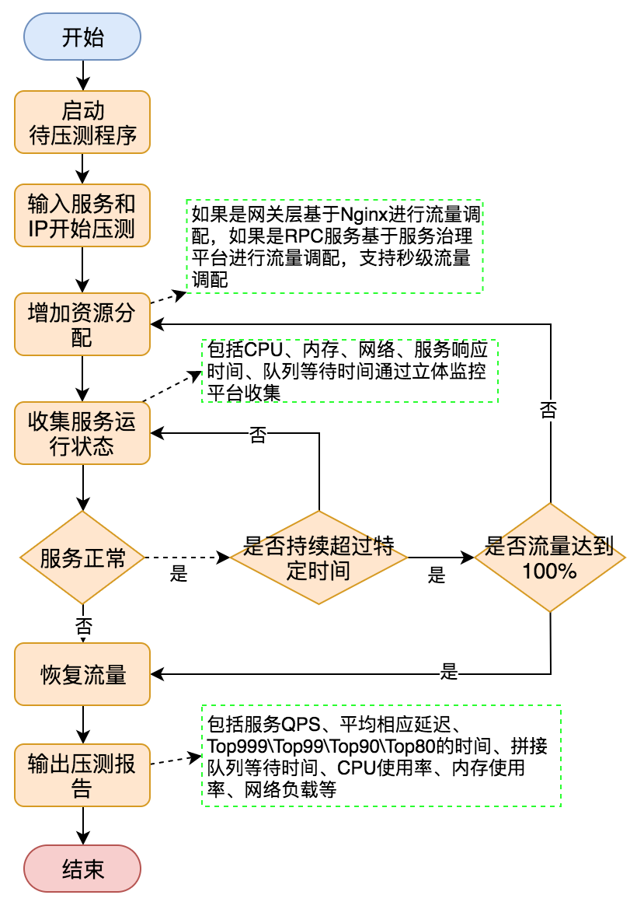
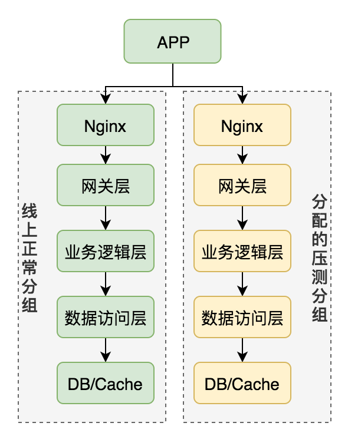

服务压测设计
压测基础
压测定义：基于线上真实环境和实际业务场景，通过模拟海量的用户请求，来对整个系统链路进行压力测试。
压测目的：验证新上线功能的稳定性，验证峰值流量下服务的稳定性和伸缩性，对线上服务进行更准确的容量评估，找到系统的瓶颈并针对性优化。
压测工具：
JMeter，用户对服务器、网络或对象模拟巨大的负载，来在不同压力类别下测试它们的强度和分析整体性能，支持分布式压测
TCPCopy，流量复制工具，能够把线上机器的流量导流到压测环境的机器上。为营造巨大的压力请求，使用Tcpdump录制请求，然后使用TCPCopy回放功能产生巨大的压力
Apache ab：针对HTTP请求压测
压测极限标准：
机器load average不超过CPU核数*0.6
服务进程CPU占有率不超过(cpu核数*0.6)*100/机器部署的服务进程数
网卡流量不超过网卡容量的60%（超过可能延时较大）
请求超时不超过十万分之一
QPS不低于预估的85%，否者需要优化或给出合理解释
压测实施方案条件：
1、为模拟更真实的环境，压测机器与线上机器同等配置仿照线上机器的部署情况，同时压测一个机器上的所有服务
2、压测数据尽可能使用线上展示数据
压测实施方案
方案一：复用线上环境压测
低峰期，比如凌晨3点，回放只读请求，写请求无法压测（会存在数据污染）
方案二：构造全套线上环境
全部部署一套，需要注意隔离消息/短信/PUSH，防止对用户骚扰。读和写都能压测。但成本高。
方案三：基于真实流量调配进行线上压测
以局部评估整体。完全使用线上环境和数据，把线上请求逐步（每1%）分配至某一台服务器直到服务器到达极限。
依赖1：服务需要具有实时调整流量分配的能力，通过服务治理平台实现
依赖2：需要提供服务监控平台，实时监控服务运行信息
不足：只能达到最大的线上流量，对于流量小的服务不能测试出真实的处理能力。

此方案存在的问题：
1、很难全面的对整个服务集群进行压测
2、以局部推算整个集群的情况难免会以偏盖全，无法评估整个系统的真实性能水平，主要原因包括：
只关注涉及的核心系统，无法覆盖到所有的环节
系统之间都是通过一些基础服务进行串行，如Nginx、Redis、数据库、磁盘、网络等等，而基础服务问题再单机压测中往往不能被暴露出来。
方案四：全链路压测方案
对全链路的压测是准确评估整个系统性能水平的必经之路。使用线上真实压测环境，涉及核心技术：压测标示透传，压测服务隔离，压测数据隔离
1、压测标示透传
线程间的透传：通过ThreadLocal对象。ThreadLocal会为每个线程创建一个副本，用来保存线程自身的副本变量。利用InheritableThreadLocal的特性，对于父线程ThreadLocal中的变量会传递给子线程保证压测标示的透传。
进程间的透传：存在RPC或HTTP请求的header中
2、压测服务隔离
压测通常选择在深夜低峰期进行。在低峰期，机器基本都是处于比较空闲的状态。根据业务的需求在线上对整条链路快速创建一个压测分组，隔离出一批空闲的机器用于压测。将正常流量与测试流量在机器级别进行隔离，从而降低压测对服务集群带来的影响。

3、压测数据隔离
a）使用"影子表"数据隔离的方案
b）"影子表"的核心思想是，使用线上同一个数据库，包括共享数据库中的内存资源，因为这样才能更接近真实场景，只是在写入数据是会写在了另一张"影子表"中，从而避免脏数据写入（同一个库不同的表）
c）对于KV存储，也是类似的思路。比如MQ的实现，MQ包括生产和消费消息两端，业务可以根据实际的需要选择在生产端忽略带测试标识的消息，或者在消费端接受消息后忽略两种情况。